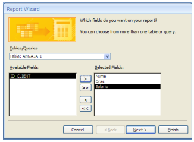
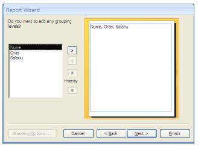
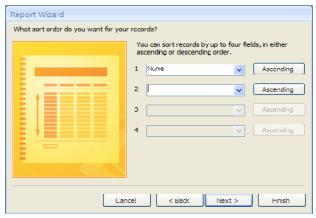
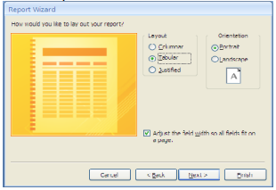
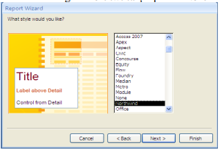
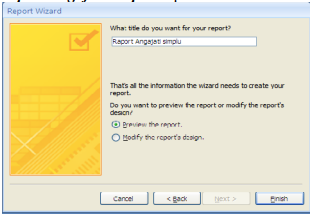

Un raport nu este altceva decât o interogare dintr-o bază de date ce urmează a fi interpretată de o anumită persoană. Acea persoană doreşte să vizualizeze respectivele date într-un mod cât mai plăcut astfel încât să poată cât mai uşor să extragă o informaţie relevantă.
La rapoarte contează foarte mult două aspecte:
Avem deja două interogări salvate.
Pentru a face un raport mergem în ribbon-ul Create şi alegem
|
Vrăjitorul (Wizard) ne întreabă ce stă la baza raportului nostru. Putem alege dintre tabelele şi interogările deja create. Alegem tabela ANGAJATI. Acum putem să selectăm coloanele de care avem nevoie în raport. Alegem : Nume, Oras, Salariu. Apăsăm butonul Next. |
Putem să grupăm datele într-un anumit fel, dar nu avem nevoie aşa că apăsăm butonul Next. |
|  |  |
|
Putem de asemenea să menţionăm
modul de sortare. Vom alege să sortăm după
|
Putem să alegem layout-ul raportului.
Vom bifa |
|  |  |
|
Alegem un template (şablon) pentru
raportul nostru. Avem în listă o serie de stiluri
predefinite care conţin anumite atribute de
formatare. Alegem |
În final dăm un nume raportului: |
|  |  |
Observaţi că raportul este tabela ANGAJATI, dar aspectul fizic, estetic, este diferit de cel din baza de date.